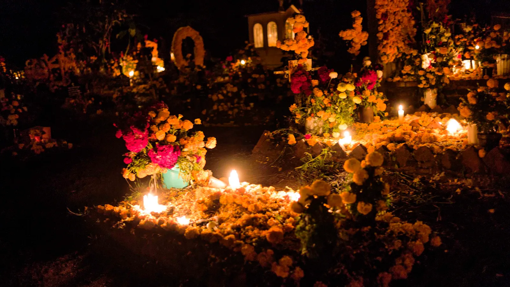
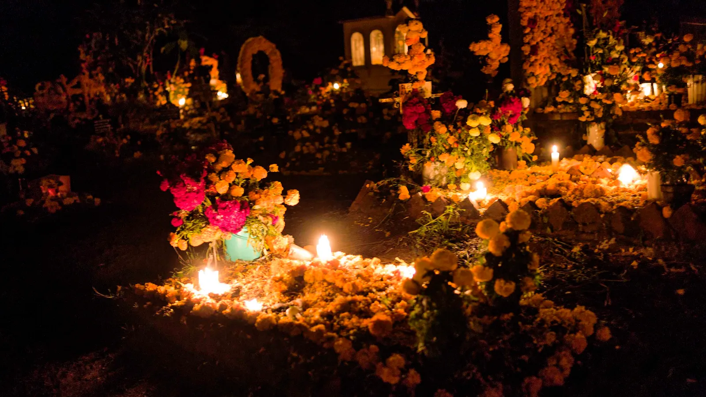

Elementos del Altar y su Significado
Velas
Las velas representan la luz y guían a las almas hacia el altar. Simbolizan el fuego y la purificación.
Flores de Cempasúchil
Las flores de cempasúchil, con su color brillante, marcan el camino para que las almas encuentren el altar.
Pan de Muerto
El pan de muerto simboliza el ciclo de la vida y la muerte, con huesos que representan los difuntos.
Agua
El agua se coloca para saciar la sed de las almas que regresan y simboliza la pureza.
Sal
La sal simboliza la purificación y se utiliza para preservar la vida. Se coloca en un pequeño plato.
Frutas
Las frutas representan la generosidad de la tierra y son un símbolo de la abundancia.
Fotografías
Las fotos de los difuntos se colocan para recordarlos y honrar su memoria.
Objetos Personales
Se colocan objetos que pertenecieron a los difuntos para que sientan que están en casa.
Papel Picado
El papel picado simboliza el viento y la fragilidad de la vida, y decora el altar con colores vibrantes.
Incienso
El incienso se utiliza para purificar el ambiente y atraer las almas de los difuntos.
Cruz
La cruz representa la fe y la protección divina sobre los que han partido.
Chocolate
El chocolate se ofrece a los difuntos como símbolo de alegría y para recordar sus gustos.
Bebidas
Las bebidas, como el tequila o el mezcal, son ofrecidas a los difuntos, recordando su vida y celebrando su memoria.
Juguetes
Se colocan juguetes para honrar a los niños que han partido, recordando su inocencia y alegría.
Artesanía
Objetos artesanales representan la cultura y tradición del pueblo, y se ofrecen en honor a los difuntos.
Calaveritas de Azúcar
Las calaveritas de azúcar son un dulce tradicional que representa la muerte de una manera festiva.
 
